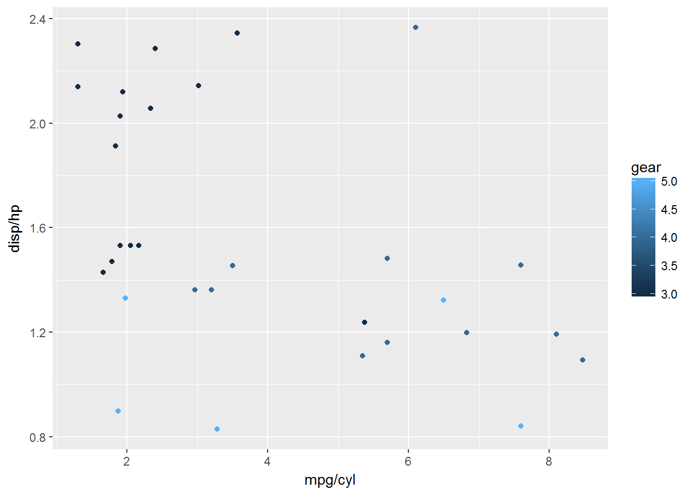

ggloop: Intro
Jan 1, 0001What is it?
ggloop is a package which allows the user to construct multiple ggplot2 plots by passing vectors of aesthetics rather than single aesthetics. Users can pass x, y, and ... vectors to aes_loop(), which like aes(), is a nested function - which sits inside of ggloop(). The pairing, or remapping, behaviors of these vectors are determined by the remap_xy and remap_dots options.
Some quick tips
- Nested lists or lists of
ggplot2plots can have features added to them by using the special l-plus operator -%L+%. - All vectors greater than length one which are passed to
x,y, or...must be wrapped byc()and must not contain any nestedc(). remap_xycontrols how thexandyvectors are pairedTRUE= default; acts likeexpand.grid()but removes duplicates and unordered setsFALSE= mimics R’s internal recycling methodNA= leaves unpaired aesthetics unpaired (i.e. ifxis one element longer thany, then the last mapping will have noyaesthetic)
remap_dotscontrols how the...arguments are pairedTRUE= similar toremap_xy = TRUEbut actually more likeexpand.grid(); for example, if two paired aesthetics (i.e.colorandsize) have the same variable (i.e.gear) then they will be paired (i.e.colour <- gear; size <- gear)FALSE= default; similar toremap_xy = NA; any unpaired aesthetics will be left unpaired.
Where to get it
ggloop can be downloaded from CRAN by using install.packages("ggloop") or it can be obtained from GitHub by using devtools::instal_github("seasmith/ggloop").
Examples
Create a list of xy plots.
library(ggloop)
library(ggplot2)
g <- ggloop(data = mtcars,
mappings = aes_loop(x = c(mpg:hp, mpg/cyl),
y = c(hp:mpg, disp/hp),
color = gear),
remap_xy = FALSE)
g <- g %L+% geom_point()## Warning in g %L+% geom_point(): The special infix operator `%L+%` will be
## deprecated. Please use `+` as you would for 'ggplot2'.g$color.gear$`x.mpg/cyl_y.disp/hp` ## view one of the plots